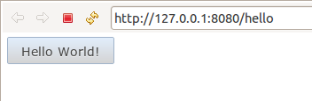

With RAP 2.0, it's becoming a lot easier to write custom widgets or other add-ons for RAP. We have published a new Java API to synchronize server-side objects with their related objects on the client. This API is built on the new RAP protocol and it lets you send updates directly to the client (and receive updates from the client in turn) without diving too deep into RAP's internals. In particular, you don't have to write any so-called LifeCycleAdapters (LCAs) anymore.
The central interface, called RemoteObject, is used to communicate with the client-side counterpart of an object, the remote object. First you need to create this object, then you can start sending updates to it by simply calling the remote object's set, call, etc. methods.
The following snippet shows how to create a remote object of the type example.CoffeeMachine and set the property sugar to the value false. That's all there is to do to create the object on the client and set a property on it. The framework will render a create operation to the client.
Connection connection = RWT.getUISession().getConnection(); RemoteObject remoteObject = connection.createRemoteObject( "example.CoffeeMachine" ); remoteObject.set( "sugar", false );
To receive updates from the client, you have to add an operation handler to the remote object. This operation handler has handleXxx methods for all relevant protocol operations.
remoteObject.setHandler( new AbstractOperationHandler() {
@Override
public void handleNotify( String event, Map properties ) {
// react on the event, notify listeners ...
}
} );
The new API lives in the package org.eclipse.rap.rwt.remote. It's still considered provisional, but already used by a couple of widgets and services in RAP itself. It's expected to evolve over the next release, but we don't expect big changes.
To reduce the code required to implement an EntryPoint, we provide an abstract base class called AbstractEntryPoint with a skeletal implementation of the interface. It creates a display and a main shell and starts the SWT event loop when in SWT mode, you don't have to care for these things anymore.
We recommend to use this base class for all entrypoints rather than implementing the interface itself. The following code snippet shows a minimal but complete entry point:
public class HelloEntryPoint extends AbstractEntryPoint {
@Override
protected void createContents( Composite parent ) {
parent.setLayout( new GridLayout() );
Button button = new Button( parent, SWT.PUSH );
button.setText( "Hello World!" );
}
}
The main shell is full-screen by default, but this can be changed by overriding another method, createShell().

The RWT Launcher has got new options to configure the session timeout and the context path, just like the RAP Launcher.
To help getting started with a minimal Hello World application, we added a new very basic template to the RAP Tools. This template uses an ApplicationConfiguration, registered using declarative services, instead of workbench extension points.